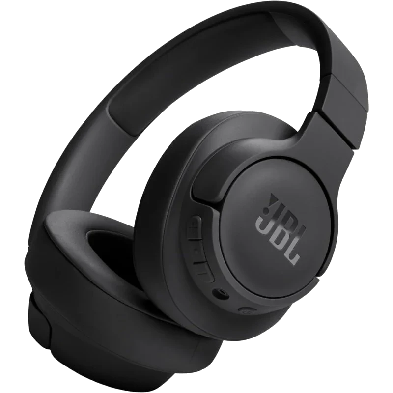

Auriculares JBL
22€ 5.0⭐Sonido de alta calidad y graves potentes: los auriculares Tune 720BT con Bluetooth 5.3 inalámbrico ofrecen el potente sonido JBL Pure Bass que puedes escuchar en las discotecas más famosas del mundo.
🛒 Añadir a la cesta